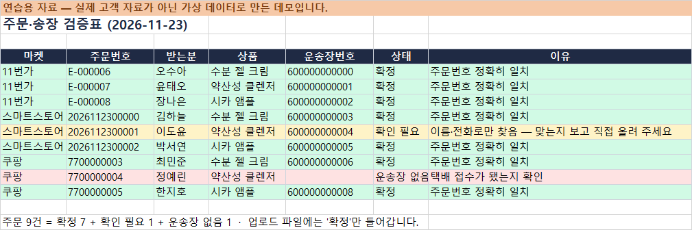
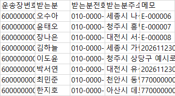
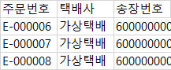

주문 엑셀과 운송장,맞춰 붙이는 일을 대신.
여러 마켓의 주문 엑셀을 모아 택배 접수 파일을 만들고, 택배사 운송장 결과를 주문에 맞춰 마켓별 송장 업로드 파일로 나누는 Windows 프로그램 데모입니다.
만들어 두었지만 아직 팔지 않습니다. 찾는 분이 계시면 실제 파일로 먼저 확인한 뒤 판매를 정합니다.

이 일을 손으로 하면,이런 말을 하게 됩니다.
- 주문 엑셀과 운송장을 하나씩 맞춰 붙여요.오픈마켓 주문을 정리하는 판매자님
- 송장 번호를 마켓마다 따로 올려요.여러 마켓에 발송 처리를 하는 담당자님
주문번호가 정확히 맞을 때만 확정하고,
애매한 건은 업로드 파일에 넣지 않고 따로 빼 둡니다.
파일을 넣어 두면,여기까지 한 번에 합니다.
- 마켓 주문 모으기
- 택배 접수 파일
- 운송장 맞추기
- 마켓별 송장 파일
들어오는 것
- 마켓별 주문 엑셀 (데모는 3곳)
- 택배사 운송장 결과 파일 (데모는 가상 택배사 양식)
나오는 것
- 택배 접수 파일 (메모 칸에 주문번호)
- 마켓별 송장 업로드 파일 — 확정된 주문만
- 검증표: 확정 / 확인 필요와 그 이유
가상 자료로 한 데모2026-11-23 기준
그림으로 다시 그리지 않고,데모가 만든 엑셀을 그대로 찍었습니다.


문제를 일부러 섞어 돌렸고,이렇게 잡았습니다.
추측해서 채우지 않습니다. 확실하지 않으면 결과 파일에 넣지 않고 사람이 볼 수 있게 남깁니다.
| 문제 | 데모에서 | 어떻게 처리 |
|---|---|---|
| 메모가 빠진 운송장 | 이름·전화로만 찾음 1건 | 확정하지 않고 확인 필요로 |
| 운송장이 없는 주문 | 1건 | 업로드 파일에 넣지 않음 |
| 주문번호가 정확히 맞음 | 7건 | 확정 → 마켓별 업로드 파일 |
데모라서아직 아닌 것부터 말씀드립니다.
아직 아닌 것
- 실제 마켓 주문 파일과 실제 택배사 파일로는 아직 시험하지 않았습니다. 마켓 모양을 흉내 낸 가상 양식입니다.
- 마켓이나 택배사 사이트에 로그인하거나 대신 올리지 않습니다. 올릴 파일까지 만듭니다.
- 받는 분 이름·전화·주소를 다루므로, 자료는 담당자님 PC 안에서만 처리합니다.
맞는 분
- 여러 마켓에서 하루 수십 건 이상 직접 발송하는 분
- 택배 접수와 송장 등록을 엑셀로 하는 분
- Windows PC를 쓰시는 분
권하지 않는 분
- 이미 통합 주문관리 서비스를 쓰고 계신 분 — 그쪽이 낫습니다.
- 주문이 하루 몇 건뿐인 분
- Mac만 쓰시는 분
계산은 프로그램 코드가 하고, 이 데모는 AI를 쓰지 않습니다. 자료는 담당자님 PC 밖으로 나가지 않습니다.
바탕이 되는 엑셀 자동 취합 보기이 일, 손으로 하고 계신가요?알려 주시면 실제 파일로 먼저 확인해 보겠습니다.
개인정보를 지운 견본을 보내 주시면 되는지, 안 되는지와 그 이유를 2일 안에 답해 드립니다. 아직 판매 전이라 가격은 정하지 않았습니다.
오픈채팅에 ‘송장’ 한 단어만 남겨 주셔도 됩니다. 어떤 데모를 보고 오셨는지 세어, 찾는 분이 많은 것부터 실제 상품으로 만듭니다.